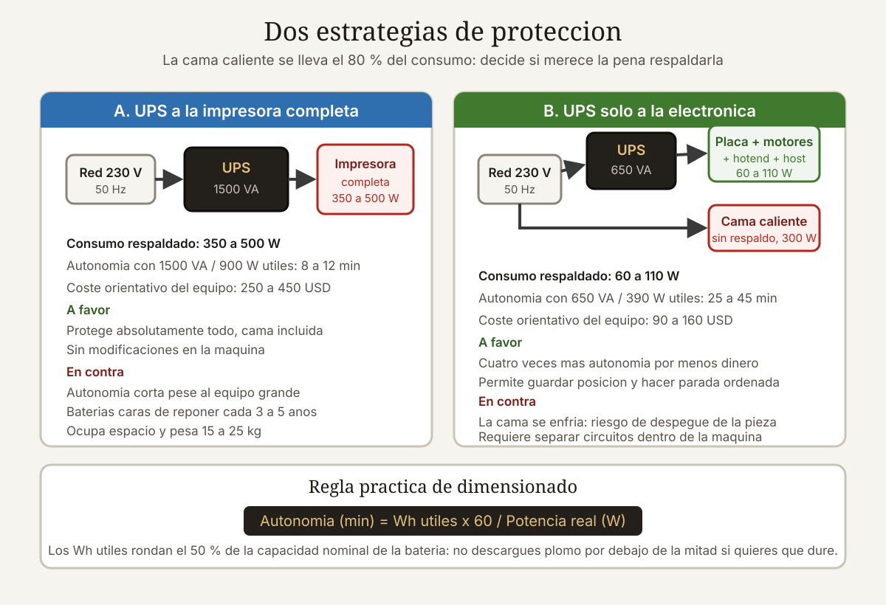

Qué cubre esta guía
- Cuánto consume realmente una impresora 3D
- Topologías de UPS y cuál necesitas
- Onda senoidal pura: no es opcional
- Calcular la autonomía real
- La estrategia que cambia todo
- Modelos recomendados
- Reanudación tras corte en el firmware
- Mantenimiento y vida útil de las baterías
- Conclusión
- Preguntas frecuentes
Cuánto consume realmente una impresora 3D
Todo empieza aquí, y casi todo el mundo se equivoca por el mismo motivo: mira la potencia de la fuente en lugar de medir el consumo real.
Una impresora tiene dos regímenes de consumo radicalmente distintos. Durante el calentamiento inicial, la cama y el hotend tiran a plena potencia simultáneamente. Una vez en régimen, los calentadores trabajan en ciclos cortos manteniendo temperatura y el consumo medio cae a un tercio o menos.
| Impresora | Pico de calentamiento | Régimen con PLA | Régimen con ABS | Solo electrónica y motores |
|---|---|---|---|---|
| Ender 3 / V3 | 250 a 300 W | 70 a 110 W | 140 a 190 W | 25 a 35 W |
| Prusa MK4S | 230 a 280 W | 80 a 120 W | 150 a 200 W | 30 a 40 W |
| Bambu Lab X1C | 350 a 400 W | 110 a 160 W | 200 a 280 W | 40 a 60 W |
| Voron 2.4 (350 mm) | 600 a 900 W | 150 a 250 W | 300 a 450 W | 50 a 70 W |
| Gran formato 500 mm | 1.000 a 1.600 W | 250 a 400 W | 500 a 800 W | 60 a 90 W |
| Resina LCD (mSLA) | 80 a 150 W | 40 a 70 W | — | 15 a 25 W |
La columna que realmente importa
Fíjate en la última columna. La electrónica, los motores y los ventiladores consumen entre 25 y 90 W, un orden de magnitud menos que la máquina completa. Esa diferencia es la clave de toda la estrategia de protección, y volveremos sobre ella.
Topologías de UPS y cuál necesitas
Los tres tipos de USP del mercado no son gamas de un mismo producto: son arquitecturas distintas con comportamientos muy diferentes ante un corte.
| Topología | Tiempo de transferencia | Regula tensión | Precio relativo | Rendimiento |
|---|---|---|---|---|
| Reserva (offline / standby) | 5 a 12 ms | No | ×1 | 95 a 98 % |
| Interactiva de línea (line-interactive) | 2 a 6 ms | Sí, mediante autotransformador | ×1,5 a ×2 | 93 a 97 % |
| Doble conversión (online) | 0 ms | Sí, siempre regenerada | ×3 a ×6 | 88 a 94 % |
¿Importan los milisegundos de transferencia?
Menos de lo que parece, y esta es una de las confusiones más extendidas. La fuente conmutada de una impresora tiene condensadores en el bus primario que sostienen la salida durante 10 a 25 ms tras perder la entrada. Un UPS de reserva que transfiere en 8 ms queda dentro de ese margen con holgura.
El escenario donde sí importa es distinto: cuando la red no cae del todo sino que sufre caídas de tensión repetidas. Ahí un UPS de reserva conmuta a batería una y otra vez, gastando ciclos, mientras que uno interactivo de línea corrige la tensión con su autotransformador sin tocar la batería. En zonas con red inestable, esa diferencia justifica el sobreprecio.
| Situación de tu red eléctrica | Topología recomendada |
|---|---|
| Estable, cortes ocasionales completos | Reserva con onda senoidal pura |
| Caídas de tensión frecuentes, luces que parpadean | Interactiva de línea |
| Zona rural, generador, red muy sucia | Interactiva de línea de gama alta o doble conversión |
| Producción continua con valor comercial | Doble conversión |
Onda senoidal pura: no es opcional
Si hay que quedarse con un solo criterio de compra, es este. Un UPS económico genera una onda escalonada (a menudo llamada «senoidal modificada»): una aproximación cuadrada de tres niveles que se parece muy poco a la senoide de la red.
Por qué le molesta a una fuente conmutada
Las fuentes con corrección activa del factor de potencia, presentes en prácticamente todas las impresoras modernas y en todas las fuentes de calidad, incluyen un circuito que mide la forma de onda de entrada para conformar la corriente. Ante una onda escalonada, ese circuito recibe transiciones bruscas que no espera. Los efectos observados van de leves a destructivos:
- Zumbido audible en la fuente o en el transformador.
- Calentamiento anómalo de los condensadores de entrada, que reduce su vida útil.
- Rizado excesivo en la salida de 24 V, que se traduce en ruido en los sensores de temperatura.
- Apagado por protección de la propia fuente, que interpreta la entrada como fallo.
- Fallo prematuro del circuito de corrección de factor de potencia tras semanas de uso.
Cómo verificarlo si ya tienes el UPS
- Escucha. Desconecta la red con la impresora encendida en reposo. Un zumbido nuevo en la fuente es mala señal.
- Osciloscopio con sonda diferencial si tienes acceso a uno. Es la comprobación definitiva, pero exige el equipo adecuado y precauciones de seguridad con tensiones de red.
- Prueba del ventilador de escritorio. Un ventilador con motor de inducción zumba de forma notoria con onda escalonada y funciona en silencio con senoidal pura. Es un indicio rápido, no una medición.
Calcular la autonomía real
Los fabricantes especifican sus equipos en voltamperios (VA), no en vatios, y esa distinción confunde a mucha gente. La relación es el factor de potencia del UPS, normalmente entre 0,6 y 0,9.
Potencia real (W) = VA × factor de potencia
1.000 VA × 0,6 = 600 W (UPS económico)
1.000 VA × 0,9 = 900 W (UPS de calidad)La fórmula de autonomía
Un UPS típico de 1.000 VA lleva dos baterías de plomo de 12 V y 9 Ah en serie, es decir 24 V:
Energía almacenada = 24 V × 9 Ah = 216 Wh
Energía utilizable = 216 Wh × 0,5 (profundidad de descarga segura)
× 0,85 (rendimiento del inversor)
≈ 92 Wh
Autonomía = 92 Wh / consumo (W)| Carga conectada | Consumo | Autonomía con 92 Wh útiles |
|---|---|---|
| Impresora completa imprimiendo PLA | 110 W | 50 minutos |
| Impresora completa imprimiendo ABS | 190 W | 29 minutos |
| Impresora de gran formato con ABS | 650 W | 8 minutos |
| Solo electrónica, motores y ventiladores | 35 W | 2 h 38 min |
| Solo electrónica de gran formato | 75 W | 1 h 13 min |
| Impresora de resina completa | 60 W | 1 h 32 min |
Qué autonomía necesitas de verdad
La respuesta depende de qué quieras conseguir, y hay tres objetivos distintos que suelen confundirse:
- Sobrevivir a microcortes de uno a treinta segundos, que son la inmensa mayoría. Basta con 5 minutos de autonomía.
- Sobrevivir a cortes de 5 a 20 minutos, típicos de maniobras de la distribuidora. Necesitas 20 a 30 minutos.
- Terminar la impresión pase lo que pase. Inviable económicamente salvo en piezas cortas.
El objetivo realista para la mayoría es el segundo, y aun así hay una opción mucho mejor que veremos a continuación.
La estrategia que cambia todo
Aquí está el planteamiento que convierte un problema caro en uno barato: no protejas la impresora entera, protege solo la electrónica de control.
La cama caliente y el hotend son el 80 a 90 % del consumo. Si aceptas que se enfríen durante el corte, un UPS pequeño mantiene viva la placa base, los motores y los ventiladores durante horas. Cuando vuelve la red, los calentadores recuperan temperatura y la impresión continúa.
| Enfoque | UPS necesario | Precio | Autonomía | ¿Sigue imprimiendo? |
|---|---|---|---|---|
| Impresora completa, ABS | 1.500 VA senoidal | 350 a 550 USD | 15 a 20 min | Sí, mientras dure |
| Impresora completa, PLA | 800 VA senoidal | 180 a 280 USD | 35 a 50 min | Sí, mientras dure |
| Solo electrónica | 400 a 600 VA senoidal | 90 a 160 USD | 2 a 5 h | Pausa y reanuda |
Cómo se implementa
En una impresora con cama de 220 V y relé de estado sólido, la separación es directa: la fuente de 24 V que alimenta la electrónica va al UPS, y la cama va a la red sin protección. En una máquina con todo a 24 V desde una única fuente, hay dos caminos:
- Fuente auxiliar dedicada para la placa base, alimentada desde el UPS, con la fuente principal en la red. Es la solución limpia y la que usan los talleres.
- Reducir la potencia por firmware al detectar el corte, limitando la cama a un porcentaje mínimo. Funciona, pero requiere señal de estado del UPS y configuración en el firmware.
Detectar el corte y reaccionar
La mayoría de los UPS con puerto USB exponen su estado mediante el protocolo estándar de dispositivos de alimentación. En un host con Klipper o con OctoPrint sobre Linux, el demonio apcupsd o nut permite lanzar un script al detectar el paso a batería:
# /etc/apcupsd/onbattery (ejecutado al pasar a batería)
#!/bin/bash
curl -s -X POST http://localhost:7125/printer/gcode/script \
-H "Content-Type: application/json" \
-d '{"script":"M117 CORTE - pausando\nPAUSE\nM140 S0\nM104 S150"}'Ese script pausa la impresión, apaga la cama y baja el hotend a temperatura de espera, reduciendo el consumo a unos pocos vatios y multiplicando la autonomía. Al volver la red, otro script reanuda.
Modelos recomendados
Precios orientativos en dólares, referidos al mercado chileno de 2026 y sujetos a variación por distribuidor.
Para proteger solo la electrónica (la opción recomendada)
| Modelo | Potencia | Onda | Topología | Precio |
|---|---|---|---|---|
| APC Back-UPS Pro BR650MI | 650 VA / 390 W | Senoidal pura | Interactiva | 110 a 150 USD |
| CyberPower CP600EPFCLCD | 600 VA / 360 W | Senoidal pura | Interactiva | 100 a 140 USD |
| Eaton 5E Gen2 700 | 700 VA / 360 W | Senoidal pura | Interactiva | 95 a 135 USD |
| Tripp Lite SMART500RT1U | 500 VA / 300 W | Senoidal pura | Interactiva | 150 a 200 USD |
Para impresora completa
| Modelo | Potencia | Onda | Batería ampliable | Precio |
|---|---|---|---|---|
| APC Back-UPS Pro BR1500MI | 1.500 VA / 865 W | Senoidal pura | No | 320 a 450 USD |
| CyberPower PR1500ELCD | 1.500 VA / 1.500 W | Senoidal pura | Sí | 500 a 700 USD |
| Eaton 9SX 1000i | 1.000 VA / 900 W | Doble conversión | Sí | 600 a 850 USD |
| Vertiv Liebert GXT5 1000 | 1.000 VA / 1.000 W | Doble conversión | Sí | 700 a 1.000 USD |
Lo que hay que evitar
- UPS genéricos sin marca que no especifican la forma de onda. Casi siempre son escalonados.
- Equipos anunciados solo en VA sin indicar vatios ni factor de potencia: opacidad deliberada.
- Estaciones de energía portátiles como sustituto: muchas tienen tiempo de transferencia superior a 20 ms o directamente no hacen conmutación automática.
- Inversores de coche con batería de automóvil. Sin conmutación automática, sin cargador adecuado y con onda escalonada en la mayoría de los casos.
Reanudación tras corte en el firmware
Un UPS y la función de reanudación del firmware se complementan: el primero da tiempo, la segunda salva el trabajo cuando el tiempo se acaba. Conviene tener las dos.
| Firmware | Función | Fiabilidad | Requisitos |
|---|---|---|---|
| Marlin 2.x | POWER_LOSS_RECOVERY | Media a buena | Escribe estado en la tarjeta SD; conviene un detector de corte |
| Klipper | No nativa; macros o complementos | Variable | Requiere configuración manual cuidadosa |
| Prusa Firmware | Recuperación con detección por hardware | Muy buena | Solo en máquinas Prusa compatibles |
| Bambu Lab | Recuperación integrada | Buena | Automática |
| RepRapFirmware | M916 tras reinicio | Buena | Requiere respaldo de la configuración |
Los límites de la reanudación
Ninguna implementación es perfecta y conviene conocer sus fallos típicos antes de confiar en ella:
- Cicatriz en la capa de reanudación. Siempre queda una marca visible donde se detuvo la impresión, porque la capa se enfría y la nueva no funde igual.
- Pérdida de adherencia. Si la cama se enfría del todo, la pieza puede despegarse antes de que vuelva la energía. Es el fallo más común en ABS.
- Pérdida de referencia en Z. Algunas implementaciones vuelven a hacer homing y el eje Z choca contra la pieza si no está bien configurado.
- Escrituras en la tarjeta SD. Marlin guarda el estado periódicamente, lo que desgasta la tarjeta. Con intervalos muy cortos, la tarjeta falla en meses.
Mantenimiento y vida útil de las baterías
Un UPS con baterías agotadas es un enchufe caro. Y las baterías se agotan siempre, con o sin cortes.
| Factor | Efecto sobre la vida útil |
|---|---|
| Temperatura ambiente de 25 °C | Referencia: 3 a 5 años |
| Temperatura ambiente de 35 °C | La vida se reduce a la mitad |
| Temperatura ambiente de 45 °C | La vida se reduce a la cuarta parte |
| Descargas al 50 % | 400 a 600 ciclos |
| Descargas al 80 % | 150 a 250 ciclos |
| Almacenado descargado | Sulfatación irreversible en semanas |
Rutina mínima
- Prueba de descarga cada tres meses: desconecta la red con una carga conocida y cronometra. Si la autonomía cayó por debajo del 60 % de la original, cambia las baterías.
- Revisa el registro de eventos si el modelo lo ofrece: un aumento de transferencias a batería indica que la red se está degradando.
- Limpia los ventiladores y las rejillas cada seis meses. El polvo eleva la temperatura interna.
- Sustituye las baterías a los tres años aunque parezcan funcionar. Son baterías estándar de plomo AGM y se consiguen sueltas por una fracción del precio del equipo.
¿Convertir a litio?
Sustituir las baterías de plomo por LiFePO4 es tentador: más ciclos, menos peso y mayor profundidad de descarga. Pero el cargador del UPS está diseñado para el perfil de carga del plomo, con tensión de flotación en torno a 27,2 V para un sistema de 24 V. Un pack LiFePO4 de 8 celdas quiere 27,2 a 28,0 V, así que el ajuste es posible, pero exige un BMS robusto que corte ante sobretensión y una verificación cuidadosa de la tensión de flotación real del cargador. No es una modificación para hacer a ciegas, y anula cualquier garantía.
Conclusión
La conclusión práctica cabe en una frase: compra un UPS pequeño de onda senoidal pura y conecta solo la electrónica. Por 100 a 160 dólares obtienes entre dos y cinco horas de autonomía para la placa base, los motores y los ventiladores, que es exactamente lo que hace falta para que la impresión sobreviva a un corte.
Intentar mantener la cama caliente durante un apagón es una batalla perdida por termodinámica y por economía: multiplica por cinco el coste del equipo para conseguir una fracción de la autonomía. Acepta que la cama se enfríe, configura una pausa automática al detectar el corte y deja que la reanudación del firmware actúe como última red de seguridad.
Y no olvides las dos reglas que más equipos arruinan: onda senoidal pura, siempre, porque las fuentes con corrección de factor de potencia no toleran la onda escalonada; y UPS ventilado y fuera del cerramiento, porque cada 10 °C de más le quitan la mitad de vida a las baterías.
Preguntas frecuentes
¿Necesito de verdad un UPS para mi impresora 3D?
Depende de la duración de tus impresiones y de la estabilidad de tu red eléctrica. Para trabajos de dos o tres horas con red estable, probablemente no compense. Para impresiones de veinte horas o más, o si vives en una zona con microcortes frecuentes, un UPS de cien dólares protegiendo solo la electrónica se paga con una sola impresión salvada. Considera además que muchas máquinas modernas tienen recuperación tras corte, pero esa función deja siempre una cicatriz visible y falla si la pieza se despega mientras la cama se enfría.
¿Puedo usar un UPS de onda senoidal modificada?
No es recomendable. Las fuentes conmutadas con corrección activa del factor de potencia, que llevan prácticamente todas las impresoras modernas, esperan una onda senoidal para conformar la corriente de entrada. Con onda escalonada aparecen zumbidos, calentamiento anómalo de los condensadores y, en algunos casos, apagados por protección o daño progresivo del circuito de corrección. Lo peor es que el daño suele ser silencioso durante semanas o meses. Busca en la ficha técnica la mención explícita a onda senoidal pura; si no aparece, asume que el equipo es escalonado.
¿Cuánta autonomía necesito realmente?
Mucha menos de la que parece si proteges solo la electrónica. Con la cama y el hotend fuera del UPS, el consumo baja a entre veinticinco y noventa vatios, y un equipo de seiscientos voltamperios entrega de dos a cinco horas, suficiente para casi cualquier corte real. Si en cambio conectas la impresora completa, el mismo equipo dará entre veinte y cuarenta minutos con PLA y menos de quince con ABS. La estrategia de proteger solo la electrónica multiplica la autonomía por cinco y divide el precio por tres.
¿Sirve una estación de energía portátil en lugar de un UPS?
Solo si especifica funcionamiento en modo de alimentación ininterrumpida con un tiempo de transferencia inferior a diez milisegundos, y muchas no lo hacen. Buena parte de las estaciones portátiles del mercado tardan entre veinte y treinta milisegundos en conmutar, o directamente carecen de conmutación automática, lo que hace que la impresora se reinicie igualmente. Si el fabricante no publica el tiempo de transferencia, asume que no sirve. Su ventaja es la capacidad, con cientos de vatios hora frente a los cien escasos de un UPS pequeño, pero sin conmutación rápida esa capacidad es inútil para este uso.
¿Cada cuánto hay que cambiar las baterías del UPS?
Entre tres y cinco años en condiciones normales, y bastante menos si el equipo trabaja caliente. La regla es que cada diez grados por encima de veinticinco reducen a la mitad la vida útil: un UPS a treinta y cinco grados durará la mitad, y a cuarenta y cinco, la cuarta parte. Haz una prueba de descarga cada tres meses cronometrando la autonomía con una carga conocida, y sustituye las baterías cuando bajen del sesenta por ciento del valor original. Son baterías estándar de plomo AGM y se compran sueltas por una fracción del precio del equipo completo.
¿Es mejor un UPS o la función de recuperación tras corte del firmware?
Son complementarios y conviene tener ambos. La recuperación por firmware es gratuita pero deja una cicatriz visible en la capa donde se detuvo, puede fallar si la cama se enfría y la pieza se despega, y en algunas implementaciones el eje Z choca contra la pieza al volver a buscar el origen. El UPS evita la interrupción en primer lugar, que siempre es preferible. La configuración óptima combina las tres capas: unidad de alimentación ininterrumpida para la electrónica, pausa automática con enfriamiento controlado al detectar el corte, y recuperación por firmware como último recurso.
Este artículo es contenido editorial independiente: no contiene ubicaciones patrocinadas ni enlaces de afiliado. Si en futuras actualizaciones se agregan enlaces a proveedores de componentes, serán identificados explícitamente. El código y las conexiones son referenciales y deben adaptarse y probarse con tu propio hardware. Si detectas un error en esta guía, por favor avísanos.
Sigue aprendiendo
Si imprimes piezas de gran tamaño, revisa qué exige realmente el formato grande en la guía de impresoras 3D de 500 mm, y aprende a detectar puntos calientes en la electrónica con cámaras térmicas.
Fuentes primarias y lecturas recomendadas
Documentación técnica de fabricantes de sistemas de alimentación y de firmware de impresión. Precios orientativos sujetos a variación.
- APC by Schneider Electric — Guía técnica de topologías de UPS
- Eaton — Documentación técnica sobre topologías y formas de onda
- Marlin Firmware — Configuración de Power Loss Recovery
- Klipper — Documentación oficial de configuración
- Network UPS Tools (NUT) — Documentación del proyecto
- Battery University — BU-201: How does the Lead Acid Battery Work?
- IEEE Std 1184 — Guía para baterías en sistemas de alimentación ininterrumpida
Enlaces revisados: 15 de agosto de 2026.